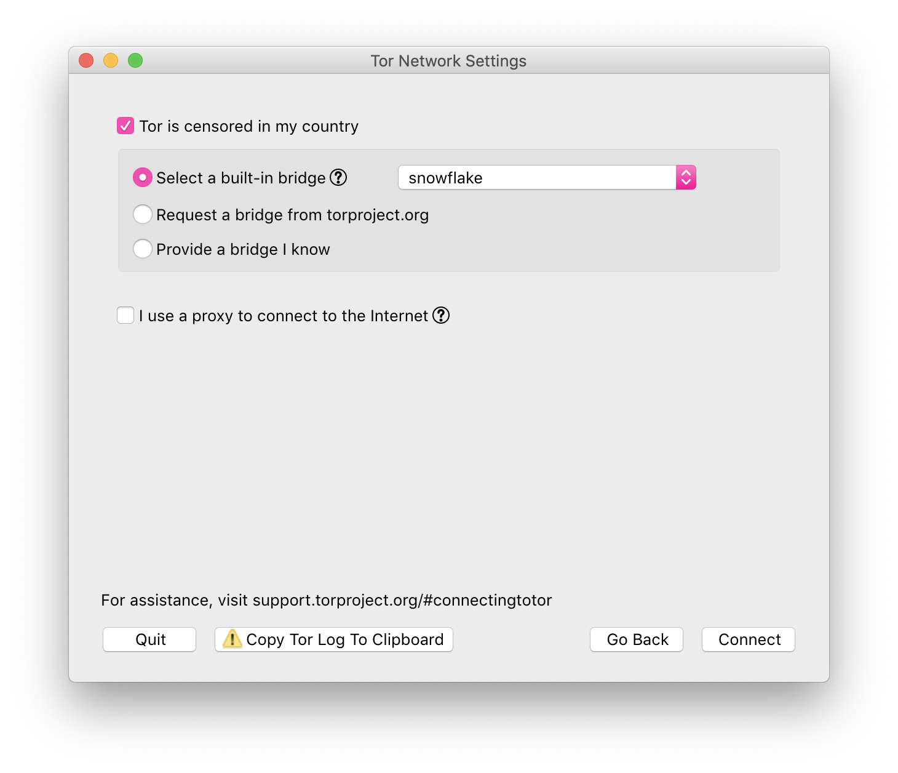

If your internet access is censored, you should download Tor Browser.
If your internet access is not censored, you should consider installing the Snowflake extension to help users in censored networks. There is no need to worry about which websites people are accessing through your proxy. Their visible browsing IP address will match their Tor exit node, not yours.
Install In Firefox or Chromium based browsers
If you would like to run a command-line version of the Snowflake proxy on your desktop or server, see our community documentation for running a standalone Snowflake proxy.